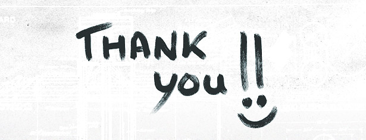

We did it! From what started as a bit of experiment, we seemed to build some momentum over our first season, topped off by our Season Finale and Fundraiser event at the end of November 2013. It was a stressful event, due in part to this, but it also felt like a triumphant celebration of all we had achieved in our first season. Many fond memories, and we even raised some money.
We would like to thank everyone who made our first season and fundraiser a success. People were generous beyond our wildest expectations. Below is a picture of Sarah Angliss playing at our fundraiser. Sarah has supported throughout but our thanks extend to so many people that we aren’t even going to attempt a list. Hopefully you know who you are, we certainly do.

Our fundraising efforts raised just over £1200. Not bad for a sound art event in a rural village hall. Read on to find out what 2014 holds.
Onward
In order to make this sustainable, we have set a budget of £400 for each If Wet. Therefore the funds we have raised so far will cover three events in the village hall in 2014. We are now looking for funding for additional events in this our home venue. We hope that potential funders will see the effort and outcomes of our first season and will be willing to match our own fundraising. We’ll see. We’d certainly love to do more events in our hall this year, since this is where the heart of If Wet lies.
Once we see how we get on with our search for funding, we will define our programme at Callow End Village Hall, but for now we just wanted to provide this update and statement of intent.
Also, If Wet has grown wings and will take flight in 2014, stopping to perch at a variety of venues – occasionally with a subtly different format. First up, we have been asked by Flatpack Festival to host an If Wet as part of their festival this year. The second If Wet outing of the year will be the Southbank Centre, when we host a Meet The Makers event. Then we are talking with Capsule about a potentially very exciting event in April. More details on all of these soon but we are delighted to be keeping such fabulous company!
AND we secured funding through Sound and Music, which will see us tour some village halls this year.
Wowee! Thanks again to all who have supported us.
ONWARD.